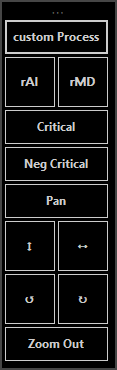
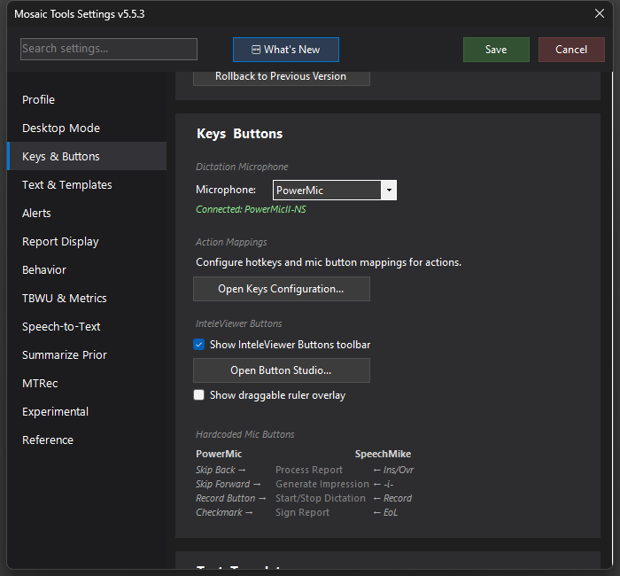

InteleViewer Buttons Toolbar
A floating, always-on-top toolbar of custom buttons that send your favorite InteleViewer shortcuts — designed in the built-in Button Studio.


What it does
A small frameless toolbar that floats on top of your viewer and holds configurable buttons for InteleViewer shortcuts — window/level presets, zoom, or any keystroke you'd otherwise reach for. Click a button, the keystroke goes to InteleViewer. It stays on top, drags anywhere by its top bar, and remembers its position.
How to turn it on / set it up
- Settings → Keys & Buttons → InteleViewer Buttons → check Show InteleViewer Buttons toolbar.
- Click Open Button Studio... to design it.
In Button Studio you build the button set:
- Add square (icon) or wide (labeled) buttons.
- Give each an icon from the built-in library and/or a text label.
- Assign what it does: a keystroke to send to InteleViewer, or a MosaicTools action.
- Set the number of columns to control the toolbar's shape (tall strip vs. compact grid).
- A live preview shows the toolbar as you edit; changes apply when saved.
Using it
Park the toolbar at the edge of a monitor near your images. Click buttons instead of hunting for function keys — useful when your hands are on the mouse and mic rather than the keyboard. Dragging by the top bar repositions it; the position persists across sessions.
Tips & gotchas
- Buttons that send keystrokes act on InteleViewer — make sure the key you assign actually matches your InteleViewer binding for that function.
- For things you do constantly, a physical mic button (Keys & Buttons) is still faster; the toolbar earns its keep for the second tier of shortcuts you use a few times an hour.
- The toolbar is hidden in headless mode contexts where there's no InteleViewer workflow.